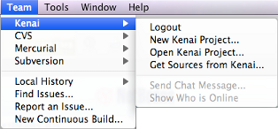

If you test NetBeans milestone builds then you already discovered it: We have added a new feature to the NetBeans IDE 6.7, the Team menu.
The Team menu replaces the Versioning menu and unlocks new Connected Developer features. Curious?
Use the Team menu for...
The Connected Developer services are provided by Kenai.com, a free software project hoster similar to java.net and SourceForge.net. The advantage for NetBeans users is that all Kenai.com services are tightly integrated into the NetBeans IDE.
The NetBeans IDE gives you direct access to all project management related actions:
When team members run into a bug, they can report it from within the IDE. Another team member sees the issue in the Kenai window, opens the report, submits a patch and closes the issue — all within the NetBeans IDE.
The Kenai integration in NetBeans IDE 6.7 will soon offer an integrated chat system that keeps you in touch with your project members all over the globe.
Using the NetBeans IDE, a team of developers will be able to check out, discuss, edit, debug, build, and commit code through one easy-to-use interface.
More features, such as continuous build integration, will be added over time.
{kind=link}